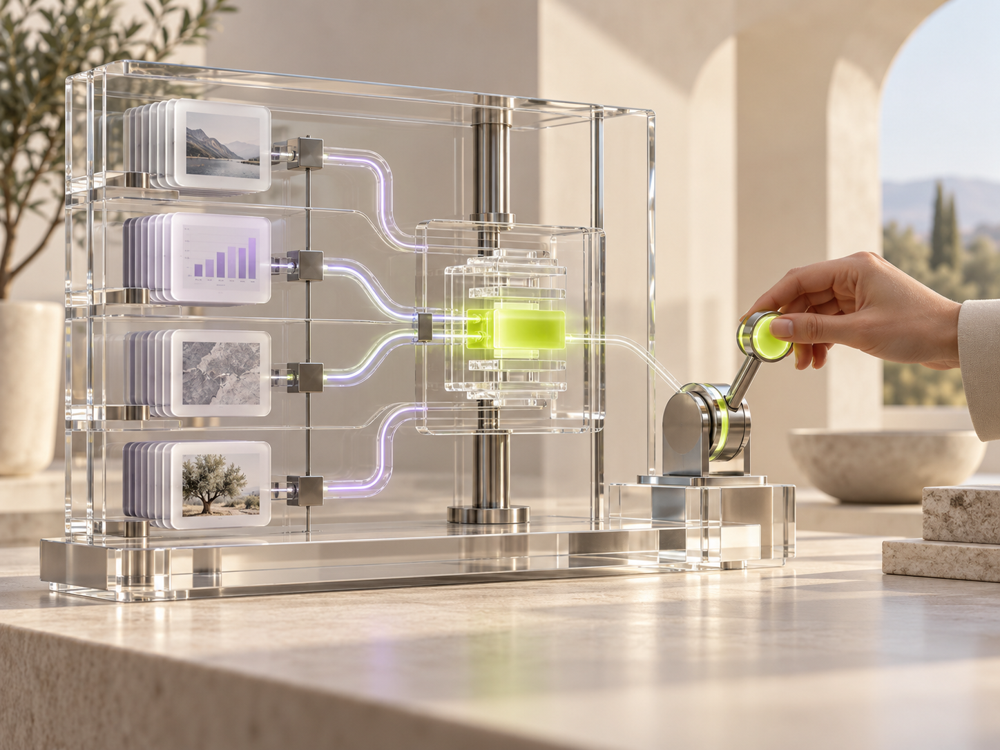

01
Listen everywhere
Unify product activity, CRM changes, support conversations, and call intelligence in real time.
- 12+ native signal sources
- Custom event streams
Klyro connects every customer signal, routes the next best action, and keeps your entire revenue team moving as one.
Usage dropped 38% after their champion changed roles. Re-engage the new owner before the renewal window.
Create a tailored brief, notify the CSM, and schedule a check-in.
THE PROBLEM
Signals are buried across calls, tickets, product usage, CRM notes, and inboxes. By the time your team connects the dots, the moment has passed.
Klyro brings every signal into one intelligent layer—so every team knows what happened, why it matters, and exactly what to do next.
ONE SYSTEM. THREE MOVES.
Unify product activity, CRM changes, support conversations, and call intelligence in real time.
Klyro interprets context, spots patterns, and prioritizes the action with the highest customer impact.
Launch coordinated plays across CS, Sales, and Support—with the right owner and context attached.
BUILT FOR THE MOMENTS THAT MATTER
Spot risk early and orchestrate the right intervention before momentum fades.
Surface adoption patterns and buying signals at precisely the right moment.
Turn milestones and blockers into timely, personalized guidance.
Route customer insight to the teams who can act on it fastest.

INTELLIGENCE WITH A POINT OF VIEW
Every Klyro recommendation includes the signals, reasoning, and confidence behind it. Your team stays in control—from approval rules to the final customer touch.
PRICING THAT MOVES WITH YOU
Choose the operating layer that fits your customer motion today. Every plan includes guided setup and the complete Klyro signal foundation.
SIGNAL
MOMENTUM
ORCHESTRATE
YOUR NEXT MOVE
See how Klyro turns scattered insight into coordinated action—in one focused 30-minute walkthrough.
Book your walkthrough ↗No pitch deck. Just your workflows, made clearer.